『星が降る夜のピアニストⅡ』
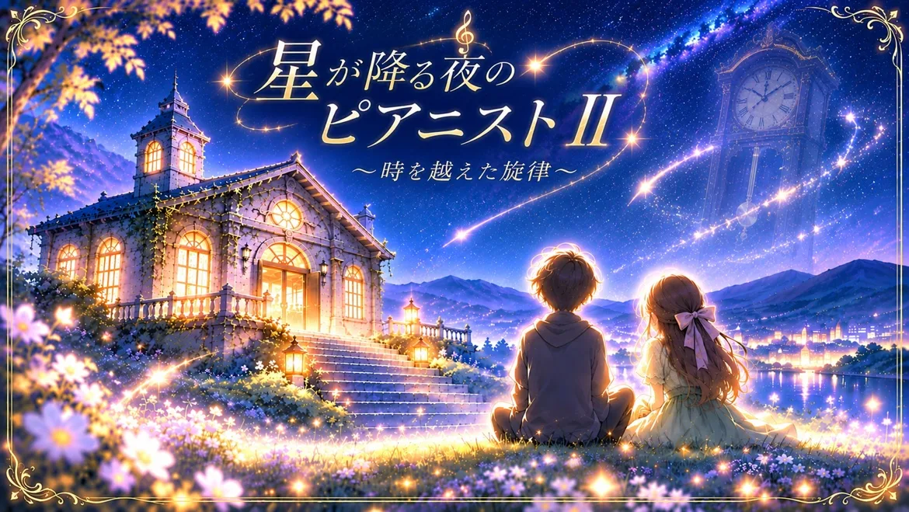
冷たい石畳が、頬に触れていた。
少年は、ゆっくりと目を開けた。
さっきまで、あの子とピアノを弾いていたはずなのに。
目の前にあるのは、知らない街の空だった。
「……ここ、どこ？」
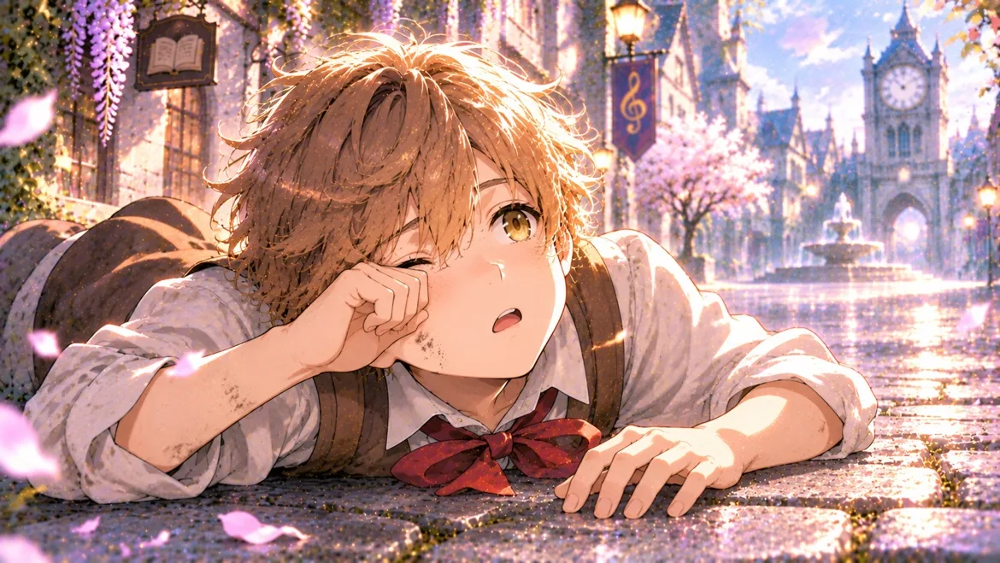
身体を起こすと、古い建物がずらりと並んでいた。
窓辺の花も、道端の看板も、まるで誰かが置き忘れた景色のようだ。
少年は振り返った。
けれど、そこに、あの子はいなかった。

「……ねえ！」
声を出しても、返事はない。
いつもなら聞こえるはずの靴音も、笑い声も、馬車の音も。
何ひとつ、聞こえなかった。
街は、息をひそめているようだった。

広場の向こうに、大きな時計塔が見えた。
針は、十二時を指している。
少年は、しばらく見上げていた。
一秒。二秒。三秒。
……針は、ぴくりとも動かなかった。
「時間まで、止まってるの……？」

少年は走った。
角を曲がり、橋を渡り、知らない路地を何度も覗き込んだ。
「あの子、どこにいるの？」
返ってくるのは、自分の声だけ。
あの夜、すぐ隣にいたはずの少女は、どこにもいなかった。
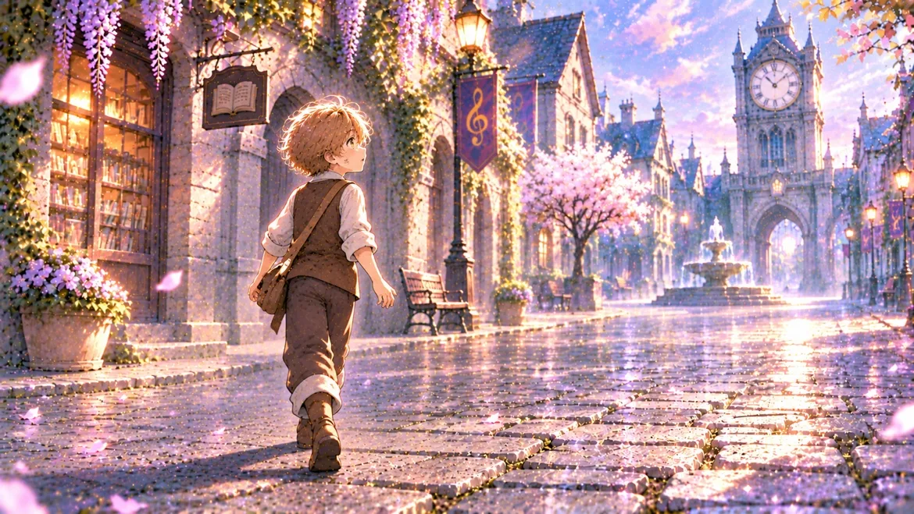
走り疲れて、少年はベンチに腰を下ろした。
足元の石畳を見つめる。
もう一度、一緒に弾こうと約束したわけじゃない。
でも、あの曲は、まだ終わっていなかった気がする。
「……もう一度、会いたいな」
その小さな声を、聞いてくれる人はいなかった。
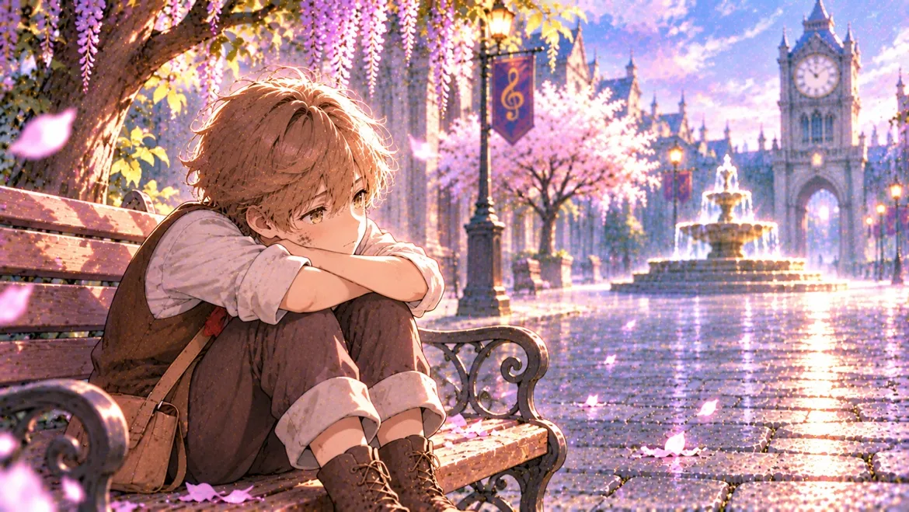
そのときだった。
風も吹いていないのに、少年の胸の奥で、何かがふっと揺れた。
聞こえたわけではない。
けれど、確かに、あの旋律の続きを思い出した。
少年は、顔を上げた。

細い路地の奥に、古びた建物があった。
小さな窓。静かな扉。
どうしてだろう。
初めて見る場所なのに、そこへ行かなければならない気がした。
少年は、ゆっくり歩き出した。
扉を開けると、部屋の真ん中に一台のピアノがあった。
長いあいだ、誰にも弾かれなかったような古いピアノ。
少年はそっと椅子に座る。
鍵盤に触れた指先が、少し震えた。
「……覚えてるかな」

ぽろん。
もう一音。
ぽろん、ぽん……。
「あっ。また間違えた！」
何度弾いても、あの夜のようにはならない。
少年は鍵盤から手を離した。
隣で笑ってくれる人がいないだけで、こんなにも難しいなんて。
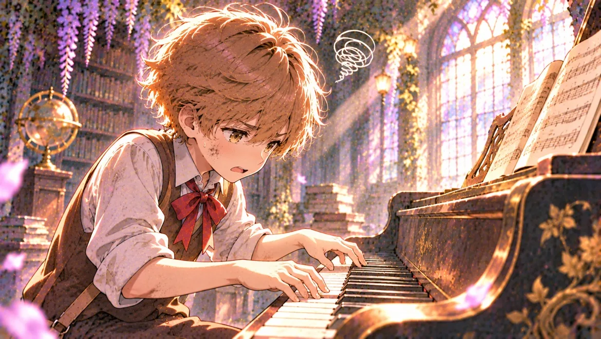
ふと、まぶたの裏に、あの夜がよみがえった。
小さな指が、隣で鍵盤を追いかける。
間違えるたび、顔を見合わせて笑った。
星が降るような夜だった。
あの子がいたから、何度間違えても、もう一度弾きたくなった。

少年は、そっと目を開けた。
間違えないことより、大切なことがあった。
あの子と、最後まで弾きたかった。
それだけだった。
「……もう一度」
少年は背筋を伸ばし、鍵盤に向き直った。
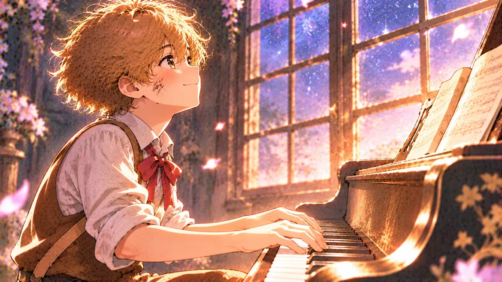
一つ目の音。
二つ目の音。
忘れかけていた旋律が、指先に戻ってくる。
あの子が笑ったところ。二人で息を合わせたところ。
そして――最後の一音。
澄んだ響きが、静かな部屋に広がった。
今度は、間違えなかった。
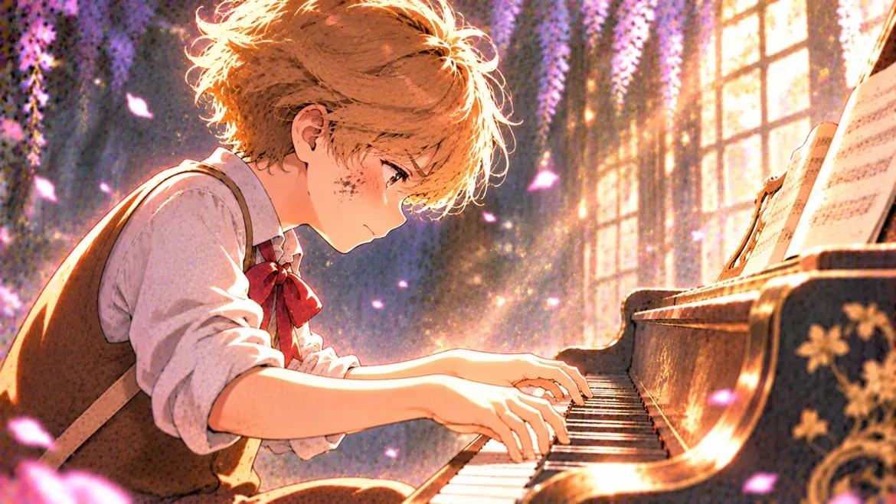
かちり。
少年は顔を上げた。
もう一度、かちり。
遠くの時計塔で、止まっていた針が動き出した。
一秒ずつ。確かに。
まるで、誰かが街の心臓を、もう一度動かしたようだった。

窓から風が吹き込んだ。
カーテンが舞い、光が床を駆け抜ける。
静まり返っていた街が、ゆっくり息を吹き返していく。
少年は思わず目を閉じた。
まぶたの向こうで、世界そのものが、くるりと回った気がした。

光がやわらぐと、目の前には見覚えのある建物が立っていた。
星空の下の、あの音楽堂。
少年は、息をのんだ。
ここだ。
あの子と一緒に、あの曲を弾いた場所だ。
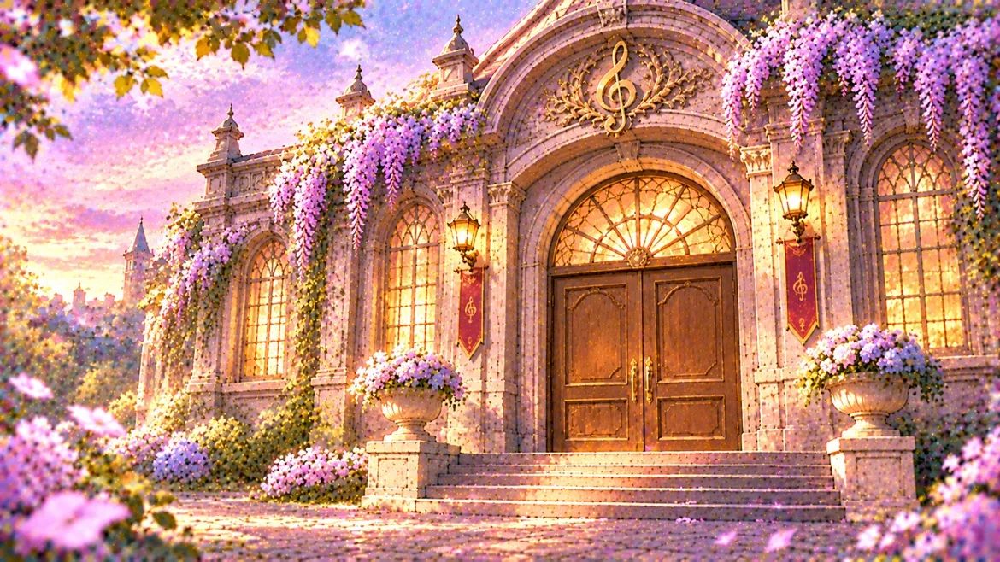
近づこうとしたとき、少年は足を止めた。
音楽堂の奥から、ピアノの音が聞こえてきたのだ。
胸が、どきんと鳴る。
聞き間違えるはずがない。
それは、二人で弾いた、あの旋律だった。

少年の唇が、自然に動いた。
ふん、ふん、ふふん……。
覚えていた。
指が忘れそうになっても、心はずっと覚えていた。
扉の前で、少年は小さく鼻歌を続けた。

そのころ、音楽堂の中では、一人の女性がピアノを弾いていた。
少女だったあの日から、どれほどの季節が過ぎただろう。
背が伸びて、声が変わって、暮らしも変わった。
それでも、この曲だけは忘れなかった。
弾くたびに、隣にいた少年の笑い声が、胸の奥でよみがえるから。
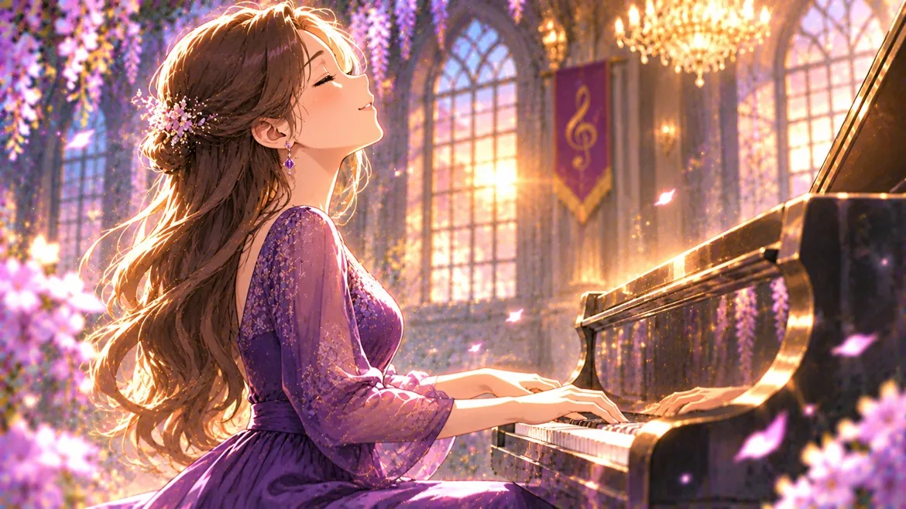
ふいに、女性の指が止まった。
ピアノの音に重なる、小さな鼻歌。
聞き間違いだと思った。
けれど、その音の運び方も、少しだけはずむところも。
「……うそ」
女性は、扉を見つめた。
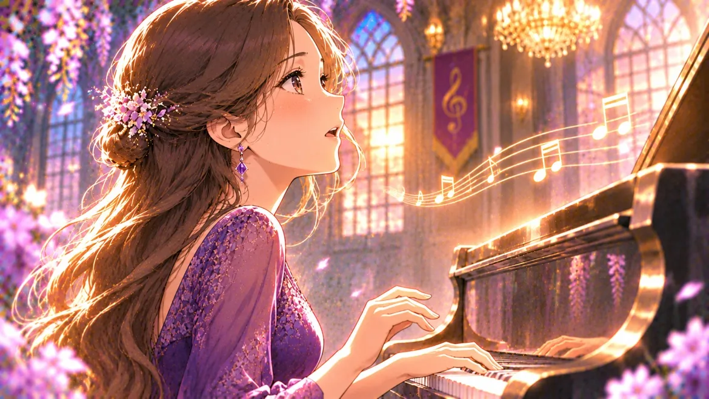
椅子を立つ音が、音楽堂に響いた。
女性は扉へ駆け寄る。
開けてしまえば、夢が終わるかもしれない。
それでも、確かめずにはいられなかった。
震える手が、扉に触れる。
そして――ゆっくり、扉が開いた。

そこに立っていたのは、少年だった。
あの夜と同じ髪。あの夜と同じ瞳。
少年は、大人になった女性を見上げた。
「……え？」
知らない人のはずなのに。
なぜだろう、その目を、知っている気がした。

女性は、両手で口を覆った。
声にならない。
何度も夢に見た姿が、今、目の前にいる。
時はこんなにも過ぎたのに、少年だけが、あの夜のままだった。
「……ほんとうに？」
涙の向こうで、少年の目が、少しずつ大きくなった。

「……きみ、なの？」
女性は何度もうなずいた。
二人は、ほとんど同時に手を伸ばした。
指先が触れた。
あたたかかった。
夢じゃない。幻でもない。
「……会いたかった！」
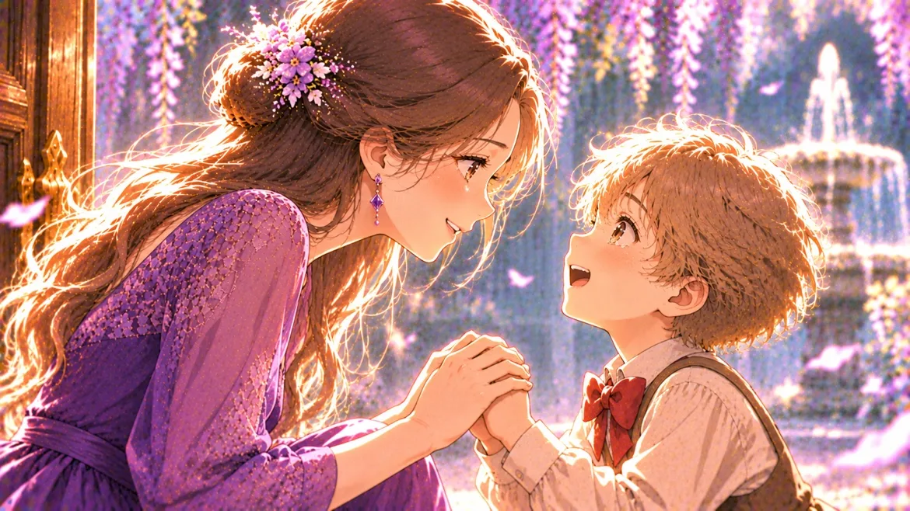
二人は、ぎゅっと抱き合った。
うれしくて、苦しくて、何から話せばいいのかわからない。
何年も胸にしまっていた言葉が、涙になってあふれた。
けれど、今は言葉なんていらなかった。
ここにいる。
それだけで、十分だった。

そのとき。
ぽろん――。
二人は顔を上げた。
誰も触れていないピアノが、ひとりでに鳴り始めたのだ。
懐かしい旋律が、音楽堂いっぱいに広がっていく。
星のような光が、鍵盤の上からふわりと舞い上がった。

「……えっ？」
少年が、自分の手を見つめた。
指先が、淡く光っている。
光は腕へ、肩へ、ゆっくり広がっていった。
何が起きているのか、少年にもわからない。
女性の顔から、笑みが消えた。

あの夜の光を、女性は覚えていた。
少年が、目の前からいなくなったときの光。
「ねえ……また光って消えないよね？」
女性は慌てて少年の手をつかんだ。
「ねえ、ちょっと……！」
もう二度と、あんな別れは嫌だった。

けれど、光はますます強くなった。
二人は必死に手を伸ばす。
「待って……！」
触れていた指が、少しずつ離れていく。
まぶしさに、女性は思わず顔をそむけた。
そして、あたりは真っ白になった。
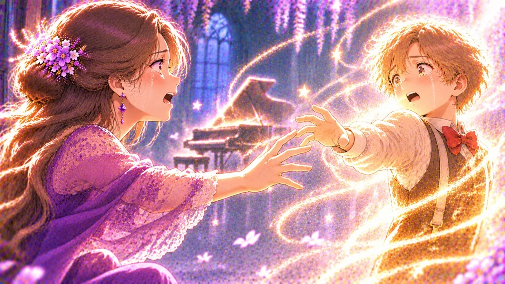
やがて、光が静かにほどけていった。
女性は、そっと目を開けた。
そこにいたのは――背の高い、一人の青年だった。
白いシャツ。茶色のベスト。そして、あの懐かしい瞳。
青年は自分の大きくなった手を見つめた。
「……え？ ぼく……？」
女性は、もう一度、両手で口を覆った。

青年は、何度も自分の手を開いたり閉じたりした。
足も、肩も、声さえも、さっきまでとは違う。
けれど、ここにいる。
彼女の目の前に、ちゃんと。
青年は少し照れくさそうに笑った。
「……ぼく、消えてないよ？」
女性の目から、今度こそ安心の涙がこぼれた。

二人は、並んで星空を見上げた。
流れ星が、ひとつ。また、ひとつ。
あの日、少年は時間の向こうに取り残された。
少女は、一人で季節を重ねてきた。
けれど今、二人の時計は同じ速さで動いている。
隣にいる人のぬくもりを、確かめながら。

やがて二人は、もう一度ピアノの前に座った。
四つの手が、そっと鍵盤に触れる。
最初の一音が響くと、二人は顔を見合わせた。
懐かしくて、おかしくて、うれしくて。
今度は、鼻歌まで一緒になった。
あの夜、途中で終わってしまった曲が、ようやく続きを奏で始めた。

ところが――。
ぽろんっ。
「あっ！」
青年が、しまったという顔をした。
「……また間違えた！」
女性は一瞬きょとんとして、それから吹き出した。
青年もつられて笑った。
あの夜と同じ笑い声が、今度は二人分、音楽堂に響いた。

間違えてもいい。
途中で止まっても、また弾き始めればいい。
二人は、顔を見合わせて微笑んだ。
あの旋律は、もう、ひとりぼっちの思い出ではなかった。
これから何度でも、一緒に奏でていける。
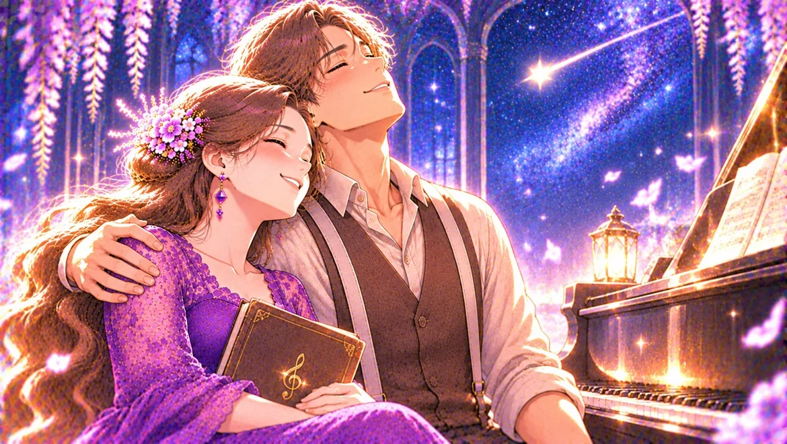
音楽堂の明かりが、夜の庭をやさしく照らしていた。
その前に並んで座る、二人の後ろ姿。
空には、数えきれないほどの星が流れていた。
少年だった彼と、少女だった彼女。
長い時間を越えて、ようやく並んだ二人の明日へ。
星は、今夜も降り続ける。